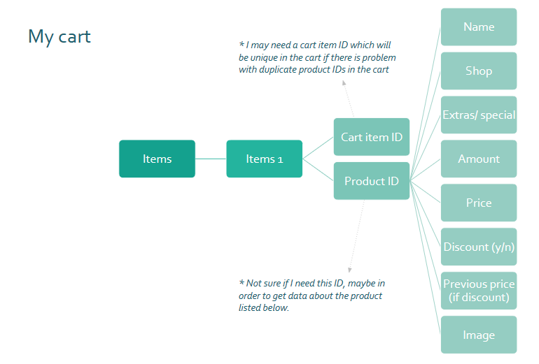

Final project

"Coffeeverse" was my final project in my studies for Frontend developer at IT-Högskolan in order to get my degree. It is a web app where one goes to order coffee and other snacks for "fika" and can choose among different coffee shops in their city. It was an idea I have had for a long time so that was the perfect instance to implement it!
My work consisted of five phases:
First, I conducted research with some users to determine the relevance of the web application as well as most important features. The first part was an anonymous questionnaire, but with the choice to leave some contact details. The second part was in-depth interviews with two of the responders who were willing to be contacted and talk about their responses.
I analysed the data to create two personas and a user journey (personas and user flow) to guide me in my design and coding. If you are interested, you can take a look at my data analysis in UX research analysis, in the section "Results".
First, I conducted reasearch with some users in order to determine the relevance of the web app as well as most important features. Research was conducted first with a questionnaire and then with two more in-depth interviews.
The most important requirements were:
Following user research and documentation of requirements, I created diagrams for the database structure and for the flow of the website's basic functions. For example:
For my UI design, I started with a moodboard where I gathered design ideas for my website. I then created different colour palettes and font styles that I could use, always keeping in mind the rules for accessibility. As this project was completed in a limited time, I did not conduct extensive user testing and iterations for my design. However, I tried to get users' feedback whenever possible.
In order to create the lo-fi and hi-fi prototypes before programming, I used Figma. Images were first edited with GIMP to remove unnecessary background and to fix dimensions. The final versions of the images used in the website were created with Figma to add the brand icon.
Firebase Firestore was used for storing data about the products in the "Coffeeverse" and fetching them via API in my Vue application. It was also used to store all the images, as this minimized the storage my app was going to occupy.
Frontend development of the web app was done with Vue js and Boostrap-Vue. Focus was on organizing the Vue components in an efficient way, applying the DRY (Don't repeat yourself) principle and translating the UI design to code, in order to deliver the best experience to the user.